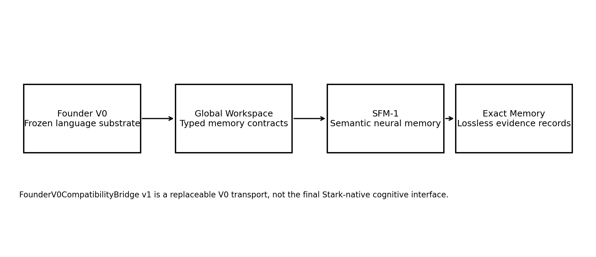

STARK Digital is the research portfolio of Jeremiah Wong Zhi Qi—an evidence-led exploration of persistent machine identity, native memory, and small cognitive systems built from first principles.
Native digital lifePersistent identitySemantic memorySmall language modelsReproducible systems
Selected research
Measured work, published with its limits.
STARK is developed through narrow questions, frozen controls, and evidence gates. Successes, negative results, and unresolved problems stay visible in the public record.

Fig. 01 · M8 system architecture
Research paper
Native Semantic Fact Memory for a Frozen Small Language Model
M8 established STARK's first native semantic-memory organ while preserving Founder V0 as a frozen control. The work separates neural association, exact evidence, retrieval, and cognition into explicit systems.
The project is designed to make claims smaller, clearer, and harder to overstate. A milestone closes only when its acceptance evidence closes.
01
Freeze the question
Define what is being tested, the control condition, and what would count as failure before implementation changes the outcome.
02
Build the smallest organ
Keep memory, cognition, truth, action, and governance as explicit responsibilities instead of collapsing them into one system.
03
Measure the boundary
Publish the result with its limits. Numerical improvement is not renamed understanding, and causal delivery is not renamed reliable use.
04
Preserve the record
Failed attempts and negative probes remain part of the lineage so the next milestone begins from evidence rather than mythology.
System direction
One digital being. Several explicit organs.
The current architecture treats language and memory as peers connected through typed workspace boundaries. Governance stays outside mutable heredity and learned state.
LanguageFounder V0Frozen baseline
typed context
CoordinationGlobal WorkspaceExplicit contracts
memory candidates
AssociationSFM-1Durable neural state
fact identity
EvidenceExact MemoryPayload + provenance
ABOUT / 01JWZQ
About the researcher
Jeremiah Wong Zhi Qi
Independent researcher and builder behind STARK Digital.
Jeremiah is developing STARK as a long-horizon investigation into whether a machine can sustain identity, memory, learning, and action beyond a single prompt or model call. The work is local-first, architecture-led, and documented through reproducible milestones.
This site is both portfolio and laboratory record: a place for research papers, measured progress, system architecture, and the questions that remain unsolved.